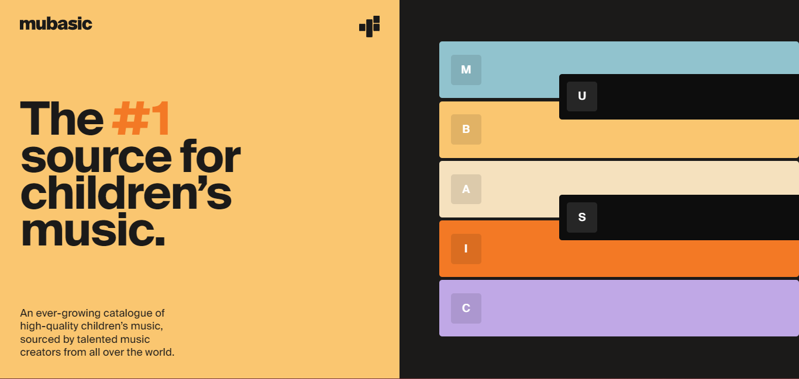
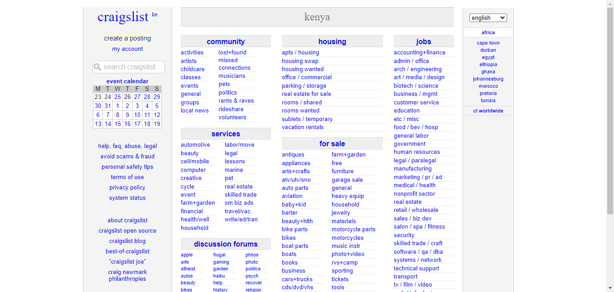

Designing a Good Website
Qualities of a good website
- A website should be well designed and functional in such a way that it looks good and does what it is supposed to do quickly.
- A website should be easy to use meaning that there should be obvious, logical navigation with clear hierarchy.
- It should be optimized for a mobile use and experience since people are more inclined to use their phones when it comes to accessing websites on the go.
- It should have fresh & quality content that not only provides the user with up to date information but also delivers it in a simple way.
- A good website should have readily accessible contact and location for when the user wants to contact you.
- A good website should have clear calls to action with the purpose of what you want your visitors to do being clearly stated
- A good website should be optimized for search and the social web so that it can easily top the rankings of search engines such as Google, Brave., etc.
Qualities of a bad website
- A bad website is non-responsive meaning that it can only be viewed correctly in a select number of devices, not meeting the broad number of people worldwide using different types of devices while accessing the internet and websites.
- A bad website does not have conventional navigation such as scrolling from top to bottom, a bad website will have a different type of navigation adding a painpoint to new users who want to get something quickly out of the website.
- A bad website is unreadable. This includes having small fonts for both text and headings and having font colors that do not contrast with the background color to make them readable.
- A bad website does not cater for the human intuition. This means that for example when it comes to a phone, we are inclined to scrolling, tapping and viewing content that is usually centered on the screen. This is not catered for by bad websites.
- A bad website does not have consistent branding meaning that it uses different fonts and colors across the website not really retaining a certain theme throughout the website.
- A bad website does not support accessibility. This could range from having more than one language to having a high contrast display to cater for users with poor vision.
- A bad website has slow load time and too many ads. Slow load times makes the user uninterested in wanting to access the site. Too many ads distract the user from looking for what they really came to the website for
An Example of a good website.
Mubasic is a good example of a good website. According to Mubasic, "Studies prove that children's abilities to learn are highly affected by auditory inputs. We believe that children deserve high quality music productions - just like adults - and are striving to set the new standard for children's music anywhere in the world." It is the number one website that provides music for children. Attached below is a photo of Mubasic's landing page.

Mubasic achieves alot in design that is tailored towards its target audience, children. It has load time animations that are lively and engaging. It has consistent branding with colors that are vibrant to attract and retain the attention of its users. It has interactives keys that play some sounds when clicked which can act as a call to action. It is well structured and clearly communicates the brand's mission. My top three attributes that make it a good website are:
- It has a consistent branding as this is seen by the font sizes, colors and brand in general.
- It has a quick load time that easily retains the user's attention.
- It has a call to action at the landing page that allows users to interact with the website and see what it can potentially offer.
Three suggestions that might improve the site:
- Reduce javascript background activities as it can slow load time on slow and outdated devices.
- Have different experiences for the mobile view, tablet view and desktop view with each providing a unique experience instead of the same experience across the board.
- Remove unnecessary and unused features to free up space and provide a minimalistic look.
A web development tool that may achieve my stated suggestions is reactjs and tailwind css library since they support latest animations and different unique styling with quick load time.
An Example of a bad website.
Craigslist is a good example of a bad website. According to Wikipedia, "Craigslist is an American classified advertisements website with sections devoted to jobs, housing, for sale, items wanted, services, community service, gigs, résumés, and discussion forums. Craig Newmark began the service in 1995 as an email distribution list to friends, featuring local events in the San Francisco Bay Area. It became a web-based service in 1996 and expanded into other classified categories. It started expanding to other U.S. and Canadian cities in 2000, and now covers 70 countries." Attached below is a photo of Craigslist's landing page.

Craigslist does not do anything in terms of design. It uses the basic HTML display that was used probably more than 10 years ago. It does not cater for user intuition. It is really cramped up and focuses more on functionality instead of usability. It is non-responsive meaning that it cannot be viewed in devices such a phones and or tablets. It has slow load time as well. My top three attributes that make it a bad website are:
- It is non-responsive.
- It does not have a unique branding and a mission that stands out in design.
- It has a slow load time and looks very outdated.
Three suggestions that might improve the site:
- Update the design to match the current design themes.
- Reduce load time.
- Make it responsive.
A web development tool that may achieve my stated suggestions is reactjs and tailwind css library since they support latest animations and different unique styling with quick load time thereby making Craigslist fast, responsive and look good.